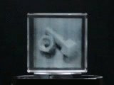

- Japanese / English
Research
Research Interests
- Volumetric displays
- Directional display techniques
- Nanomaterials for displays
Projects
|  |
3D structure exhibiting multiple 2D patterns A three-dimensional (3D) structure designed by our proposed algorithm can simultaneously exhibit multiple 2D patterns. The 3D structure provides multiple patterns which can be observed from different viewpoints. Since the structure can independently and simultaneously provide multiple 2D patterns with directional characteristics, the proposed algorithm can be applied to information service systems such as digital signage. I am working to improve the algorithm (e.g., image quality improvement, and increasing number of patterns) and to represent color dynamic patterns (development of LED-based volumetric display). |
 |
Volumetric display system based on nanomaterials Volumetric displays render three-dimensional (3D) images directly onto a physical volumetric space, enabling observers to view 3D images from any direction without the need to wear devices such as special glasses. Therefore, volumetric displays have received significant research attention as a 3D visualisation technique. I am working to develop an optically controlled volumetric display consisting of nanomaterials, which are controlled by irradiation with external light. Such optically controlled volumetric displays offer higher definition than conventional electrically controlled ones, which require wirings that deteriorate spatial resolution and induce occlusion. |